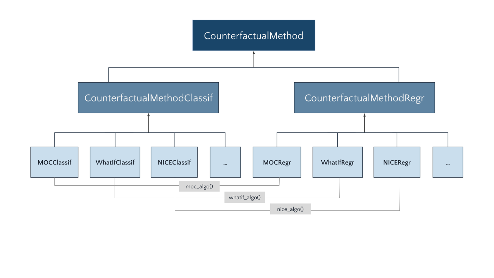
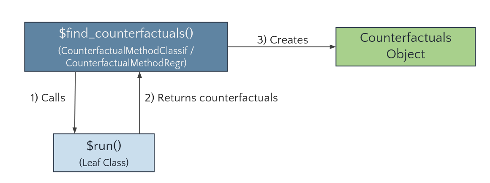

vignettes/how-to-add-new-cf-methods.Rmd
how-to-add-new-cf-methods.RmdIn the following, we illustrate how further methods can be added to the counterfactuals package by integrating the featureTweakR package, which implements Feature Tweaking of Tolomei et al. (2017).
(Note that the featureTweakR package has a couple of limitations, e.g., that factors in the training data cause problems or that the algorithm is only applicable to randomForests trained on standardized features. Therefore, featureTweakR is not part of the counterfactuals package, but serves as a suitable example for our purpose here.)
Before we dive into the implementation details, we briefly explain the structure of the counterfactuals package.
Each counterfactual method is represented by its own R6 class. Depending on whether a counterfactual method supports classification or regression tasks, it inherits from the (abstract) CounterfactualMethodClassif or CounterfactualMethodRegr classes, respectively. Counterfactual methods that support both tasks are split into two separate classes; for instance, as MOC is applicable to classification and regression tasks, we implement two classes: MOCClassif and MOCRegr.

Leaf classes (like MOCClassif and MOCRegr) inherit the find_counterfactuals() method from CounterfactualMethodClassif or CounterfactualMethodRegr, respectively. The key advantage of this approach is that we are able to provide a tailored find_counterfactuals() interface to the task at hand: for classification tasks find_counterfactuals() has two arguments desired_class and desired_prob and for regression tasks it has one argument desired_outcome.
The find_counterfactuals() method calls a private run() method (1)—implemented by the leaf classes—which performs the search and returns the counterfactuals as a data.table (2). The find_counterfactuals() method then creates a Counterfactuals object, which contains the counterfactuals and provides several methods for their evaluation and visualization (3).

To integrate Feature Tweaking, we first need to install featureTweakR and pforeach and load the required libraries.
devtools::install_github("katokohaku/featureTweakR")
# required for FeatureTweakeR
devtools::install_github("hoxo-m/pforeach")
library(counterfactuals)
library(randomForest)
library(featureTweakR)
library(R6)A new leaf class needs at least two methods: initialize() and run(). The method print_parameters() is not mandatory, but strongly recommended as it gives objects of that class an informative print() output.
As elaborated above, the new class inherits from either CounterfactualMethodClassif or CounterfactualMethodRegr, depending on which task it supports. Because Feature Tweaking supports classification tasks, the new FeatureTweakerClassif class inherits from the former.
$initialize method
The initialize() method must have a predictor argument that takes an iml::Predictor object. In addition, it may have further arguments that are specific to the counterfactual method such as ktree, epsiron, and resample in this case. For argument checks, we recommend the checkmate package. We also fill the print_parameters() method with the parameters of Feature Tweaking.
FeatureTweakerClassif = R6Class("FeatureTweakerClassif", inherit = CounterfactualMethodClassif,
public = list(
initialize = function(predictor, ktree = NULL, epsiron = 0.1,
resample = FALSE) {
# adds predictor to private$predictor field
super$initialize(predictor)
private$ktree = ktree
private$epsiron = epsiron
private$resample = resample
}
),
private = list(
ktree = NULL,
epsiron = NULL,
resample = NULL,
run = function() {},
print_parameters = function() {
cat(" - epsiron: ", private$epsiron, "\n")
cat(" - ktree: ", private$ktree, "\n")
cat(" - resample: ", private$resample)
}
)
)$run method
The run() method performs the search for counterfactuals. Its structure is completely free, which makes it flexible to add new counterfactual methods to the counterfactuals package.
The workflow of finding counterfactuals with the featureTweakR package is explained here and essentially consists of these steps:
# Rule extraction
rules = getRules(rf, ktree = 5L)
# Get e-satisfactory instance
es = set.eSatisfactory(rules, epsiron = 0.3)
# Compute counterfactuals
tweaked = tweak(
es, rf, x_interest, label.from = ..., label.to = ..., .dopar = FALSE
)
tweaked$suggestAs long as ktree—the number of trees to parse—is smaller than the total number of trees in the randomForest, the rule extraction is a random process. Hence, these steps can be repeated resample times to obtain multiple counterfactuals.
FeatureTweakerClassif = R6Class("FeatureTweakerClassif",
inherit = CounterfactualMethodClassif,
public = list(
initialize = function(predictor, ktree = NULL, epsiron = 0.1,
resample = FALSE) {
# adds predictor to private$predictor field
super$initialize(predictor)
private$ktree = ktree
private$epsiron = epsiron
private$resample = resample
}
),
private = list(
ktree = NULL,
epsiron = NULL,
resample = NULL,
run = function() {
# Extract info from private fields
predictor = private$predictor
y_hat_interest = predictor$predict(private$x_interest)
class_x_interest = names(y_hat_interest)[which.max(y_hat_interest)]
rf = predictor$model
# Search counterfactuals by calling functions in featureTweakR
rules = getRules(rf, ktree = private$ktree, resample = private$resample)
es = set.eSatisfactory(rules, epsiron = private$epsiron)
tweaks = featureTweakR::tweak(
es, rf, private$x_interest, label.from = class_x_interest,
label.to = private$desired_class, .dopar = FALSE
)
res <- tweaks$suggest
},
print_parameters = function() {
cat(" - epsiron: ", private$epsiron, "\n")
cat(" - ktree: ", private$ktree, "\n")
cat(" - resample: ", private$resample)
}
)
)Now, that we have implemented FeatureTweakerClassif, let’s look at a short application to the iris dataset.
First, we train a randomForest model on the iris data set and set up the iml::Predictor object, omitting x_interest from the training data.
set.seed(78546)
X = subset(iris, select = -Species)[- 130L,]
y = iris$Species[-130L]
rf = randomForest(X, y, ntree = 20L)
predictor = iml::Predictor$new(rf, data = iris[-130L, ], y = "Species", type = "prob")For x_interest, the model predicts a probability of 25% for versicolor.
x_interest = iris[130L, ]
predictor$predict(x_interest)
#> setosa versicolor virginica
#> 1 0 0.3 0.7Now, we use Feature Tweaking to address the question: "What would need to change in x_interest for the model to predict a probability of at least 60% forversicolor.
# Set up FeatureTweakerClassif
ft_classif = FeatureTweakerClassif$new(predictor, ktree = 10L, resample = TRUE)
# Find counterfactuals and create Counterfactuals Object
cfactuals = ft_classif$find_counterfactuals(
x_interest = x_interest, desired_class = "versicolor", desired_prob = c(0.6, 1)
)Just as for the existing methods, the result is a Counterfactuals object.
cfactuals
#> 1 Counterfactual(s)
#>
#> Desired class: versicolor
#> Desired predicted probability range: [0.6, 1]
#>
#> Head:
#> Sepal.Length Sepal.Width Petal.Length Petal.Width
#> 1: 7.2 3 4.85 1.55A minor limitation of this basic implementation is that we would not be able to find counterfactuals for a setting with max(desired_prob) < 0.5, since featureTweakR::tweak only searches for instances that would be predicted as desired_class by majority vote. To enable this setting, we would need to change some featureTweakR internal code, but for the sake of clarity we will not do this here.
Tolomei, G., Silvestri, F., Haines, A., Lalmas, M.: Interpretable Predictions of Tree-based Ensembles via Actionable Feature Tweaking. In: Proceedings of the 23rd ACM SIGKDD International Conference on Knowledge Discovery and Data Mining. pp. 465–474. KDD ’17, ACM, New York, NY, USA (2017). https://doi.org/10.1145/3097983.3098039, http://doi.acm.org/10.1145/3097983.3098039